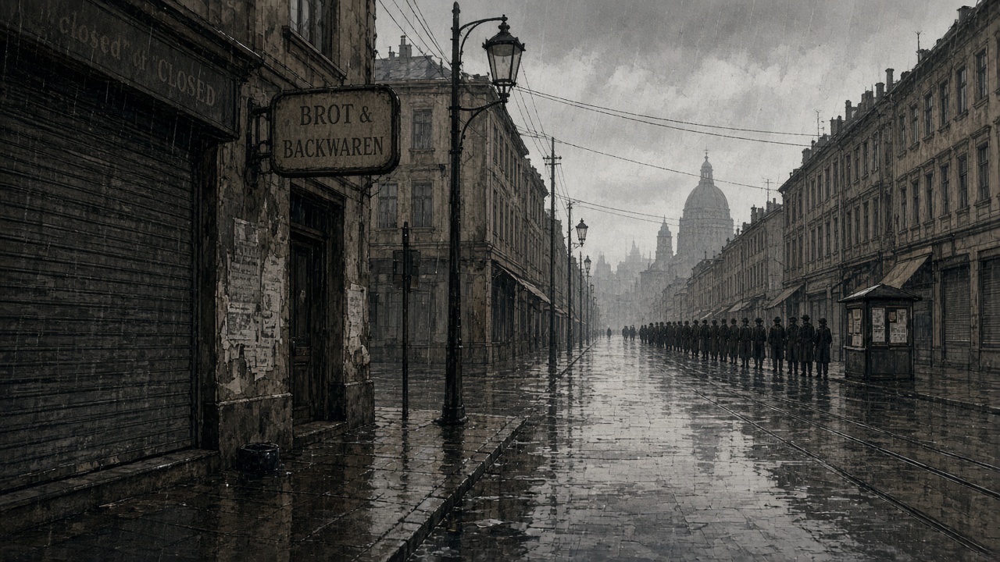
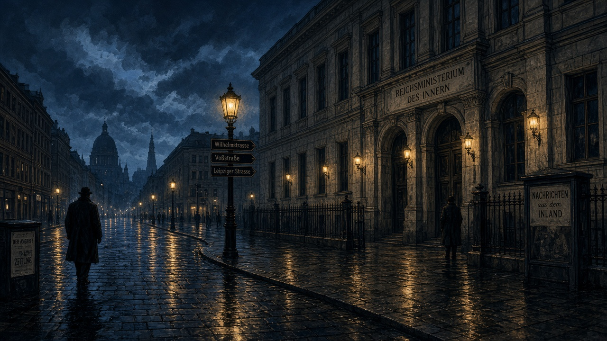
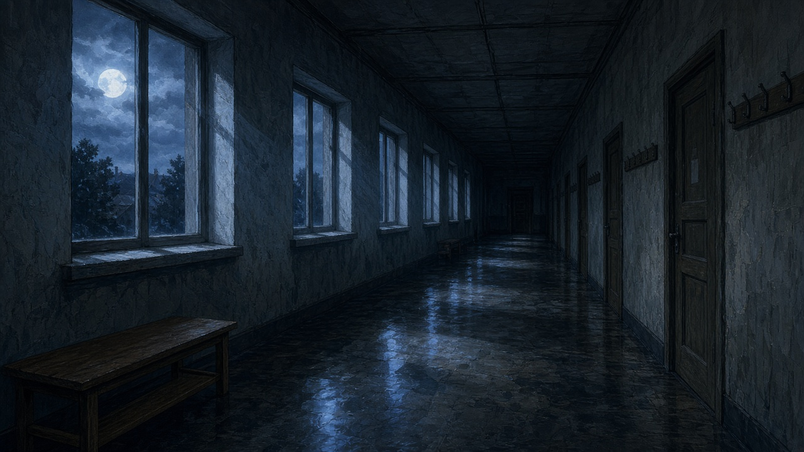
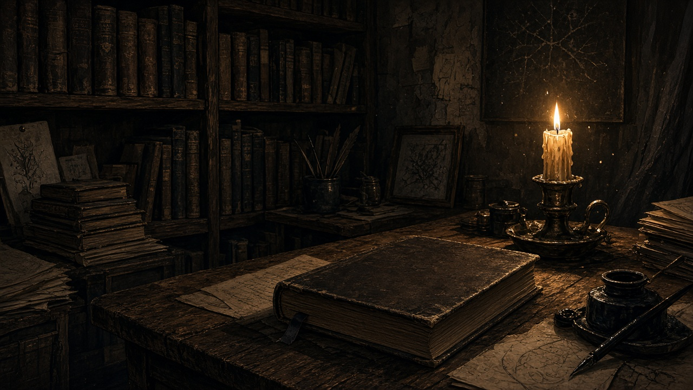
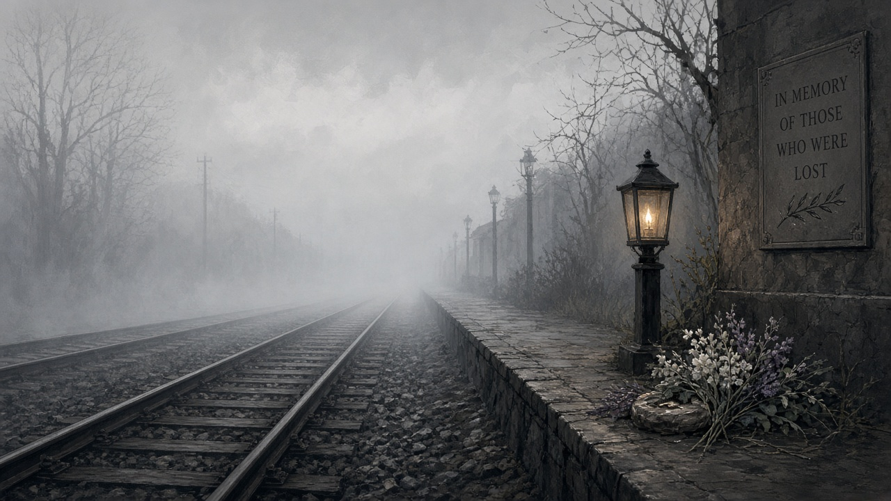
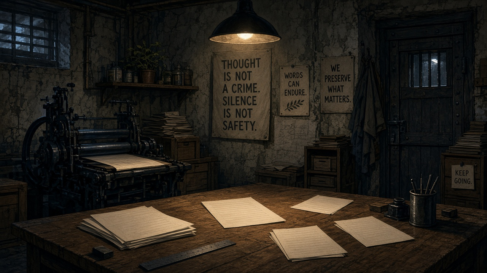
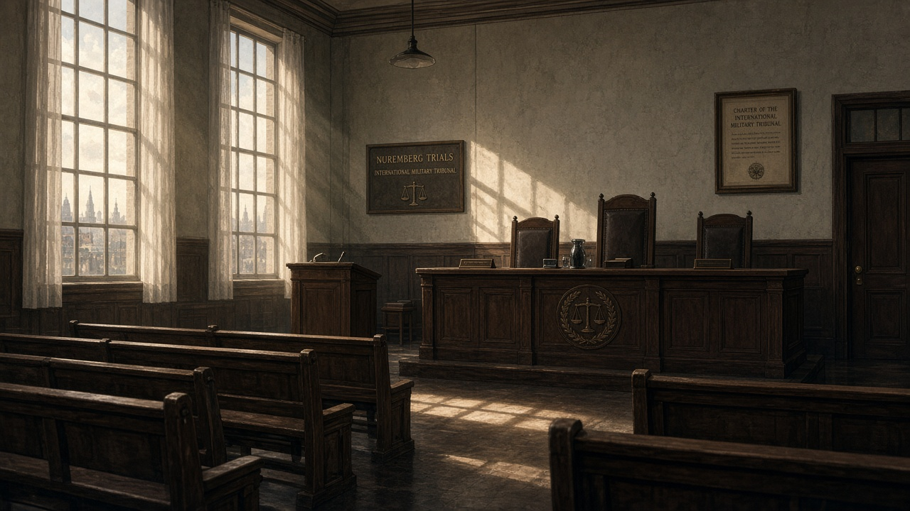

Weimar e la crisi
Democrazia fragile, umiliazione postbellica e crisi del 1929. Terreno fertile, non destino obbligato.
Schede illustrate
Le stesse scene della storia a fumetto, qui come schede rapide da ripassare.

Democrazia fragile, umiliazione postbellica e crisi del 1929. Terreno fertile, non destino obbligato.

Cancelliere via sistema politico, poi pieno poteri e repressione. Distrugge la democrazia dall’interno.

1934: eliminazione dei rivali interni. Messaggio chiaro su chi comanda.

Razzismo, Lebensraum, antisemitismo, odio per democrazia e comunismo: un programma, non solo un testo.

Radio, scuola, gioventù organizzata: consenso e paura insieme.

Da Norimberga 1935 alla Soluzione finale. Concentramento ≠ sterminio: funzioni diverse, entrambi crimini.

Non tutti tacquero: esilio, aiuto, sabotaggio. Rari, rischiosi, da ricordare.

Norimberga giudica i crimini. Studiare oggi serve a riconoscere odio legalizzato e silenzi comodi.